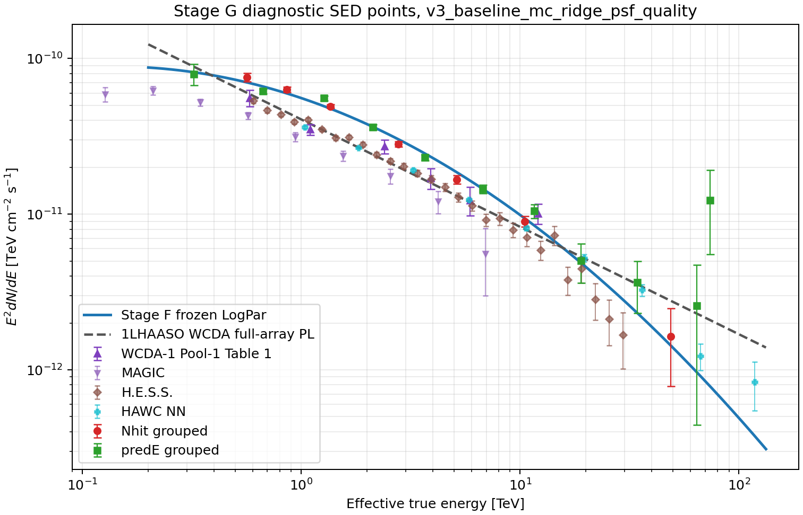
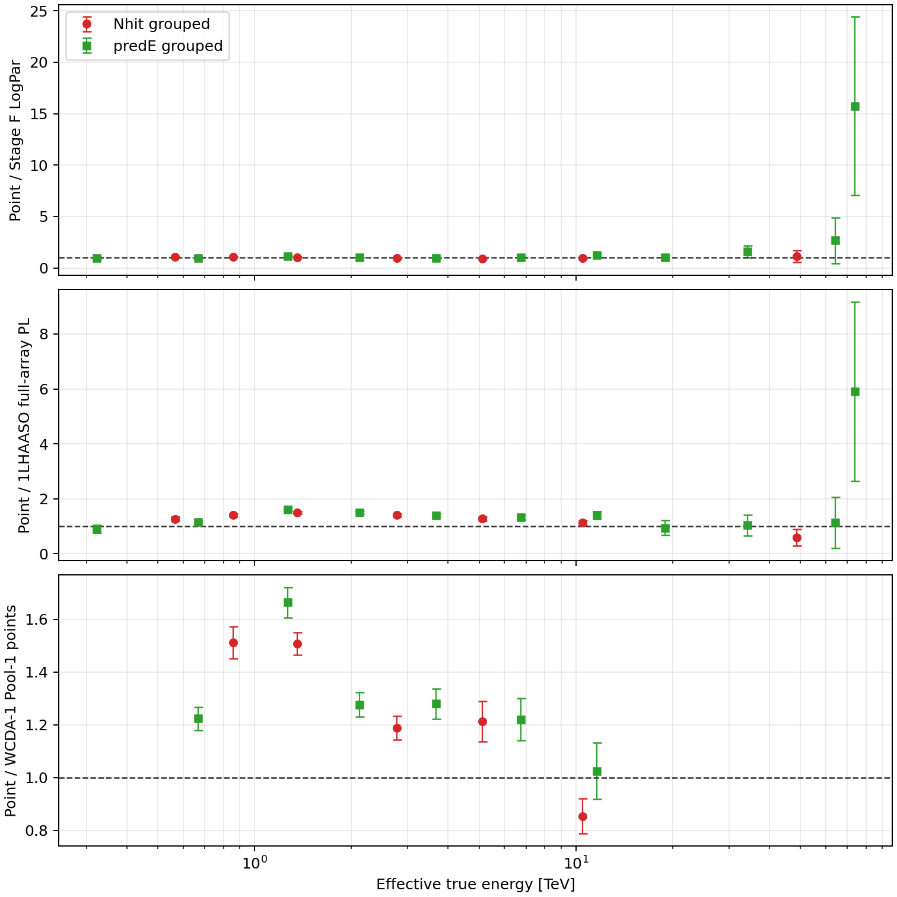
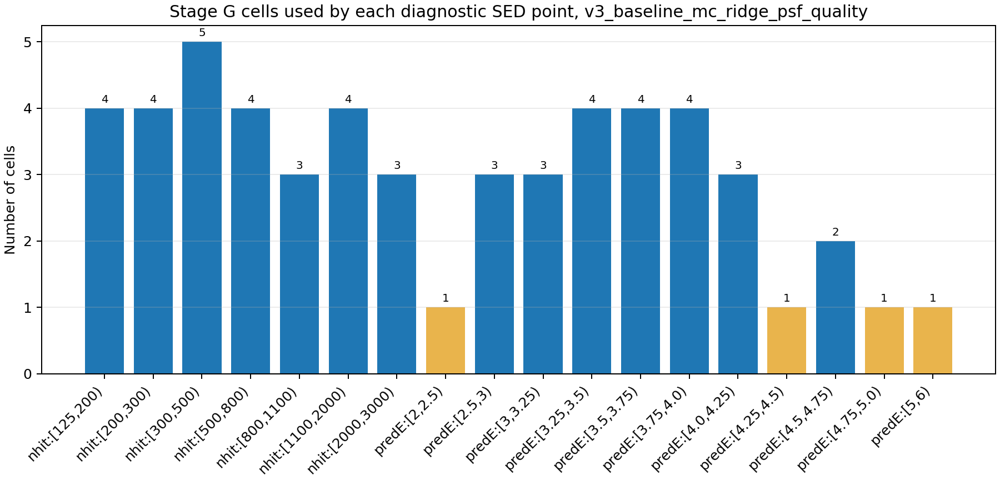

A
v3 candidate response
- Run
n/a- Status
available- Artifacts
- metadata
- Cells: 84
- Response type: primary_thrown_response
- S0: 4.000000e+06 m2
本页汇总 v3 candidate grid、冻结的 HAWC-style prefit selector、Nhit>=125 观测规约、Crab-local annulus 二阶背景曲面、forward folding fit 和 diagnostic SED points。
N_on/B_on, excess, significance, Stage F pulls, or Stage G residuals. Stage D uses direct_expectation; Li-Ma remains not applicable unless a future off-counts background is produced. Stage D candidate-grid quality may fail when excluded diagnostic/probe cells have fragile annulus fits; the frozen baseline warning count is reported separately. Background systematics compare default versus PSF-shifted annuli and first- versus second-order surfaces using the same Stage D counts maps.
1,2,3,4,14,15,16,17,26,27,28,29,30,39,40,41,42,43,52,53,54,55,65,66,67,68,69,81,82,83. Existing Stage F/G artifacts contain 1,2,3,4,14,15,16,17,26,27,28,29,30,40,41,42,43,53,54,55,66,67,68,69,81,82,83; pending selector cells are 39,52,65, stale result-only cells are none. Treat Stage F/G plots and tables as the previous reference until the 30-cell fit is explicitly rerun.
Roadmap v3 · Cell-selection diagnostics · Stage E report · Stage F report · Stage G report
| role | cells |
|---|---|
| baseline_fit | 30 |
| diagnostic_high_energy_probe | 13 |
| diagnostic_low_stat | 1 |
| diagnostic_response_tail | 13 |
| systematics_probe | 27 |
v3_baseline_30cell_prefit included cells: 1,2,3,4,14,15,16,17,26,27,28,29,30,39,40,41,42,43,52,53,54,55,65,66,67,68,69,81,82,83
excluded / diagnostic cells: 5,6,7,8,9,10,11,12,13,18,19,20,21,22,23,24,25,31,32,33,34,35,36,37,38,44,45,46,47,48,49,50,51,56,57,58,59,60,61,62,63,64,70,71,72,73,74,75,76,77,78,79,80,84
high-energy probe cells: 11,12,23,24,35,36,47,48,59,60,72,79,80,81,82,83
n/aavailableslurm_42023promotedv3_stage_c_slurm_42024promotedn/amissingn/amissingv3_stage_f_mc_ridge_psfskipped_no_promote_currentv3_stage_g_mc_ridge_psfskipped_no_promote_current| grouping | group | cells | E_eff TeV | E2 dN/dE | err | TS/sigma | ratio StageF |
|---|---|---|---|---|---|---|---|
| nhit | [125,200) | 1,2,3,4 | 0.56546 | 7.58058e-11 | 4.5508e-12 | 1.239 | 1.08 |
| nhit | [200,300) | 14,15,16,17 | 0.85927 | 6.33449e-11 | 2.5099e-12 | 1.464 | 1.062 |
| nhit | [300,500) | 26,27,28,29,30 | 1.3579 | 4.92878e-11 | 1.3971e-12 | 1.189 | 1.035 |
| nhit | [500,800) | 40,41,42,43 | 2.7686 | 2.82627e-11 | 1.0715e-12 | -1.933 | 0.9317 |
| nhit | [800,1100) | 53,54,55 | 5.1277 | 1.66880e-11 | 1.0587e-12 | -1.812 | 0.8969 |
| nhit | [1100,2000) | 66,67,68,69 | 10.478 | 8.99178e-12 | 6.9231e-13 | -0.6129 | 0.9549 |
| nhit | [2000,3000) | 81,82,83 | 48.827 | 1.63636e-12 | 8.5140e-13 | 0.2406 | 1.143 |
| predE | [2,2.5) | 1 | 0.32211 | 7.95959e-11 | 1.2293e-11 | -0.167 | 0.9749 |
| predE | [2.5,3) | 2,14,26 | 0.66797 | 6.16464e-11 | 2.1926e-12 | -2.038 | 0.9324 |
| predE | [3,3.25) | 3,15,27 | 1.269 | 5.56028e-11 | 1.9291e-12 | 3.215 | 1.126 |
| predE | [3.25,3.5) | 4,16,28,40 | 2.1197 | 3.62662e-11 | 1.3140e-12 | -0.1328 | 0.9952 |
| predE | [3.5,3.75) | 17,29,41,53 | 3.6752 | 2.30998e-11 | 1.0280e-12 | -1.369 | 0.9426 |
| predE | [3.75,4.0) | 30,42,54,66 | 6.7359 | 1.45050e-11 | 9.3754e-13 | -0.05472 | 0.9965 |
| predE | [4.0,4.25) | 43,55,67 | 11.635 | 1.04857e-11 | 1.0850e-12 | 1.89 | 1.243 |
| predE | [4.25,4.5) | 68 | 18.99 | 5.02931e-12 | 1.4090e-12 | 0.1164 | 1.034 |
| predE | [4.5,4.75) | 69,81 | 34.278 | 3.65826e-12 | 1.3432e-12 | 0.9953 | 1.576 |
| predE | [4.75,5.0) | 82 | 64.314 | 2.58240e-12 | 2.1404e-12 | 0.757 | 2.684 |
| predE | [5,6) | 83 | 73.817 | 1.23268e-11 | 6.8040e-12 | 1.697 | 15.74 |
| variant | annulus | order | fit family | B_on | excess | sigma | valid cells | LogPar phi0 | alpha | beta | chi2 |
|---|---|---|---|---|---|---|---|---|---|---|---|
| nominal_shifted_order2 | PSF-shifted | 2 | weighted_least_squares | 92981.3 | 17562.7 | 55.912 | 27 | 3.178959e-12 | 2.7382 | 0.12023 | 220.95 |
| default_annulus_order2 | 1.5-3.5 deg | 2 | weighted_least_squares | 93020.5 | 17523.5 | 55.78 | 27 | 3.156252e-12 | 2.7316 | 0.11566 | 226.11 |
| shifted_annulus_order2 | PSF-shifted | 2 | weighted_least_squares | 92981.3 | 17562.7 | 55.912 | 27 | 3.178959e-12 | 2.7382 | 0.12023 | 220.95 |
| default_annulus_order1 | 1.5-3.5 deg | 1 | weighted_least_squares | 91826.7 | 18717.3 | 59.83 | 27 | 3.136519e-12 | 2.7405 | 0.09707 | 249.65 |
| shifted_annulus_order1 | PSF-shifted | 1 | weighted_least_squares | 91309.6 | 19234.4 | 61.595 | 27 | 3.124701e-12 | 2.7422 | 0.088671 | 271.62 |
| shifted_annulus_log_link_order2 | PSF-shifted | 2 | poisson_log_link_positive | 96536.9 | 14007.1 | 44.053 | 27 | 2.737911e-12 | 2.7917 | 0.12729 | 110.91 |
High-energy predE groups: [4.0,4.25), [4.25,4.5), [4.5,4.75), [4.75,5.0), [5,6)
| item | status | evidence |
|---|---|---|
| baseline_stage_a_to_g | complete | /mnt/mydisk/server/projects/energy_reconstruction/apply/output/stage_g_v3_baseline/runs/v3_stage_g_mc_ridge_psf/sed_points_v3_baseline_metadata.json |
| baseline_vs_expanded_selector_stage_f_g | complete | /mnt/mydisk/server/projects/energy_reconstruction/apply/output/stage_f_v3_systematics_selector/runs/v3_stage_f_systematics_selector/fit_v3_systematics_metadata.json |
| central98_995_selector_audit | prefit_selector_audit_complete | /mnt/mydisk/server/projects/energy_reconstruction/apply/report/assets/v3-validation/v3_selector_systematics_summary.csv |
| stage_a_response_histogram_self_closure | complete | /mnt/mydisk/server/projects/energy_reconstruction/apply/report/assets/v3-validation/v3_response_closure_summary.csv |
| mc_reference_forward_fold_truth_closure | complete | /mnt/mydisk/server/projects/energy_reconstruction/apply/report/assets/v3-validation/v3_mc_reference_forward_fold_closure.csv |
| off_source_fake_source_validation | failed | /mnt/mydisk/server/projects/energy_reconstruction/apply/report/assets/v3-validation/v3_offsource_fake_source_summary.csv |
| time_split_background_stability | complete | /mnt/mydisk/server/projects/energy_reconstruction/apply/report/assets/v3-validation/v3_time_split_summary.csv |
| selector | cells | low Nhit | HE overlap | added | removed | added ids | removed ids |
|---|---|---|---|---|---|---|---|
| baseline_selector_central99 | 27 | 4 | 3 | 0 | 0 | ||
| expanded_selector_central99 | 62 | 11 | 10 | 35 | 0 | 5,6,7,8,9,10,11,13,18,19,20,21,22,23,31,32,33,34,35,39,44,45,46,47,51,52,56,57,58,59,64,65,70,79,80 | |
| high_energy_probe_selector | 16 | 2 | 16 | 13 | 24 | 11,12,23,24,35,36,47,48,59,60,72,79,80 | 1,2,3,4,14,15,16,17,26,27,28,29,30,40,41,42,43,53,54,55,66,67,68,69 |
| computed_baseline_central98 | 27 | 4 | 3 | 0 | 0 | ||
| computed_baseline_central99 | 27 | 4 | 3 | 0 | 0 | ||
| computed_baseline_central995 | 27 | 4 | 3 | 0 | 0 |
| fit | status | cells | model | phi0 | gamma | alpha | beta | chi2/ndof | SED pts | HE pts | max Eeff TeV |
|---|---|---|---|---|---|---|---|---|---|---|---|
| baseline_selector_central99 | passed | 27 | LogPar | 3.178959e-12 | n/a | 2.7382 | 0.12023 | 220.95 / 24 | 18 | 1 | 73.817 |
| expanded_selector_central99 | passed | 62 | LogPar | 3.375855e-12 | n/a | 2.7196 | 0.12344 | 999.21 / 59 | 18 | 1 | 72.515 |
| selector | cells | rel count | max cell count | rel sumw | max cell sumw | max sum eta |
|---|---|---|---|---|---|---|
| all_candidate_cells | 84 | -6.9843e-11 | 7.9478e-09 | 4.2793e-11 | 7.6033e-09 | 0.2 |
| baseline_selector_central99 | 27 | -1.0892e-10 | 4.1261e-09 | 1.3676e-10 | 4.6007e-09 | 0.028571 |
| expanded_selector_central99 | 62 | -7.2601e-11 | 7.9478e-09 | 4.0762e-11 | 7.6033e-09 | 0.2 |
| high_energy_probe_selector | 16 | 5.8112e-10 | 6.5629e-09 | 1.3986e-10 | 6.5629e-09 | 0.16667 |
| computed_baseline_central98 | 27 | -1.0892e-10 | 4.1261e-09 | 1.3676e-10 | 4.6007e-09 | 0.028571 |
| computed_baseline_central99 | 27 | -1.0892e-10 | 4.1261e-09 | 1.3676e-10 | 4.6007e-09 | 0.028571 |
| computed_baseline_central995 | 27 | -1.0892e-10 | 4.1261e-09 | 1.3676e-10 | 4.6007e-09 | 0.028571 |
| selector | cells | rel count | rel sumw | truth count | pred count |
|---|---|---|---|---|---|
| all_candidate_cells | 84 | -6.9843e-11 | 4.2793e-11 | 2.260184e+06 | 2.260184e+06 |
| baseline_selector_central99 | 27 | -1.0892e-10 | 1.3676e-10 | 1.883771e+06 | 1.883771e+06 |
| expanded_selector_central99 | 62 | -7.2601e-11 | 4.0762e-11 | 2.256739e+06 | 2.256739e+06 |
| high_energy_probe_selector | 16 | 5.8112e-10 | 1.3986e-10 | 1.350620e+05 | 1.350620e+05 |
| computed_baseline_central98 | 27 | -1.0892e-10 | 1.3676e-10 | 1.883771e+06 | 1.883771e+06 |
| computed_baseline_central99 | 27 | -1.0892e-10 | 1.3676e-10 | 1.883771e+06 | 1.883771e+06 |
| computed_baseline_central995 | 27 | -1.0892e-10 | 1.3676e-10 | 1.883771e+06 | 1.883771e+06 |
| validation | run | RA | MJD min | MJD max | baseline N | baseline B | baseline excess | baseline sigma |
|---|---|---|---|---|---|---|---|---|
| offsource_1 | v3_stage_e_offsource_ra93p63 | 93.63 | n/a | n/a | 3,054 | 5259.07 | -2205.07 | -34.591 |
| offsource_2 | v3_stage_e_offsource_ra73p63 | 73.63 | n/a | n/a | 3,764 | 6148.81 | -2384.81 | -35.023 |
| validation | run | MJD min | MJD max | baseline N | baseline B | baseline excess | baseline sigma | all sigma |
|---|---|---|---|---|---|---|---|---|
| time_split_1 | v3_stage_e_time_first | 59579.7 | 59609.2 | 55,214 | 45574.9 | 9639.06 | 70.28 | 53.564 |
| time_split_2 | v3_stage_e_time_second | 59609.2 | 59638.7 | 55,330 | 45535.2 | 9794.77 | 70.223 | 55.056 |
The MC reference forward-fold closure uses the Stage A binned MC numerator as the truth definition and folds the denominator through the stored response; it is a production response closure, not an independent holdout sample. Off-source fake-source controls and time-split Stage D/E runs are listed explicitly; failed controls are kept in the report rather than folded back into the frozen selector.
rho=6 deg fiducial ROI，中心标记是 Crab。空白或破碎 panel 通常来自 excluded diagnostic/probe cells 的零统计或低统计，不代表 baseline fit cells 全部失败。先看 counts 和 training mask，再看 fitted background、annulus residual，最后看 excess 和 Stage F/G 结果。




